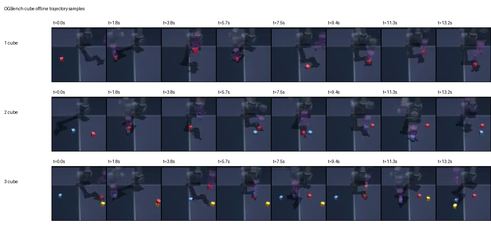

OGBench Cube Offline Trajectories
Static Contact Sheet

Eight sampled frames from 1-cube, 2-cube, and 3-cube offline trajectories.
Animated GIFs
Side-By-Side Comparison
 1-cube, 2-cube, and 3-cube clips shown together.
1-cube, 2-cube, and 3-cube clips shown together.
Original MP4s
1 cube MP4
2 cube MP4
3 cube MP4